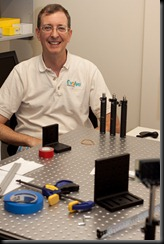
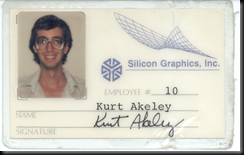
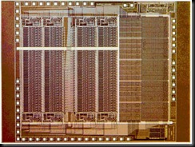
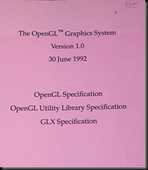
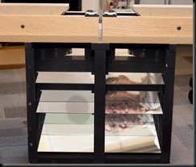

Interview done in February 2009
Kurt Akeley is currently a principal researcher at Microsoft Research in Silicon Valley. He has played a significant role in the history of computing several times; perhaps his greatest claim to fame is his work on the specification of the OpenGL graphics system, done while working at Silicon Graphics; OpenGL is still one of the two major graphics architectures still in wide use (the other one being Direct 3D). Kurt is endowed with a magic touch: he has worked on virtually all layers of the computer system stack, including hardware design, system software, CAD tools, display technology, programming languages, and many other. This interview was conducted in February 2009.
The contents of this interview is licensed under a Creative Commons with Attribution License.
 
Left: Kurt Akeley seated next to an optics table that he is using to test the design of a 3D display (October 2009, Microsoft).
Right: Kurt’s badge showing employee #10 at Silicon Graphics. Courtesy of Kurt Akeley.
Q: When did you start using computers?
A: I started using computers in my last year in high school. We had one of these teletype machines hooked up to a computer I believe that was at the University of Delaware (although I never saw it). I remember not knowing what an array was – something mysterious and wonderful. We saved our work on little yellow tapes.
Q: Your work spans all levels of the computer system architecture: from hardware design, tools for doing CAD, system software, compilers, graphics libraries. What insights do you carry from one domain to another? Do you find it easy to move between areas?
A: I did find it easy to move between areas. The general direction of my motion — when I was at Silicon Graphics — was "up". When I started at Silicon Graphics I expected that I would do silicon; that was part of the name, and that was part of the excitement — to design custom integrated circuits. In fact, I started with hardware and integrated circuit design, moved to library design, and then higher level designs (but not really application design).

Left: Die photo of the SGI geometry engine in 1982. Courtesy of Kurt Akeley.
Right: some of the founders of SGI. From the left: Marcia Allen, Mark Grossman, Dianle Wilford, Rocky Rhodes, Kurt Akeley, Marc Hannah, Tom Davis. Several of the founders are missing, including Jim Clark, Vern Anderson, Abbey Silverstone and David Brown. Courtesy of Kurt Akeley.
SGI started with Jim Clark implementing a geometry engine — his name for the custom integrated circuit that he and his students at Stanford had designed. The company was built around that piece of technology. We would start with a highly complex integrated circuit, then we would build circuit boards, and then interfaces, and then a library and finally make people use it. We did it this way because it took very long to design the custom integrated circuits; the people doing the ICs had to get started long before the people doing the interfaces and the system design. This was an implementation problem that cried out for a solution. Our solution, in the mid ’80s, was to stop building custom ICs and to use gate-array technology. That greatly reduced the technology cycle for the components.
A lot of my contribution at SGI in the first 10 years was roughly inverting that order, so that we started from the problem we were trying to solve, followed by the interface to do that, drivers and hardware systems, and finally components needed to implement that system. There’s no right answer here: it’s not right to go bottom-up or top-down; there’s some happy in-between. It’s definitely wrong to go purely bottom-up the way we were: the systems we were building were not doing as well because we had designed the wrong components. This was true in the beginning at SGI and it was largely remedied. We went from being a nothing company to more or less dominating the space of 3D graphics for workstations in the late eighties and early nineties. It is more important to design the right system than to use the very best and fastest components and to design the wrong system.
Q: Would you use today something like FPGAs (Field-Programmable Gate Arrays) for such systems?
A: If by “such systems” you mean "graphics accelerators for computers," probably not. That market has matured considerably. The handful of companies that still exist have developed a considerable expertise in building ASICs. AMD, Intel and NVIDIA do highly specialized and highly engineered components. You could not compete today. But in some new marketplace, that isn’t yet mature, and where the architectures still have to be defined to allow it to mature and to grow, the answer would be "yes".
Q: Who was SGI competing with in the ’80s?
A: It varied over the decade. [The company] Evans and Sutherland pioneered computer graphics in devices for professional application (other than simulating an airplane). Jim Clark (the founder of SGI) worked there when he was in Utah. They built very high performance 3D graphics terminals. The "terminals" were not programmable, but instead hooked to a host computer that was programmed; the host downloaded data sets to the terminal to view them interactively. That was the state of the art for professional use. There were a few very domain-specific applications in the late seventies that used these terminals. SGI distinguished itself by fully integrating the computer graphics into the workstation, building the equivalent of today’s inexpensive personal computer. It was a programmable machine with an operating system, a what-you-see-is-what-you-get terminal, which could do high-performance 3D graphics. In the first 10 years SGI focused on building tightly integrated 3D graphics capabilities into a programmable computer. Apollo and a couple of other companies were also doing it, but SGI was clearly the most successful during that decade. At the beginning of the nineties we had a clear position to drive the market.
Q: So, what happened?
A: SGI went like a cannonball launched from the cannon at ground level. SGI decided early on to cater to professional customers and to help them solve their difficult problems. So we built a sales force with a very deep competence in the field. The business model was to charge high premiums for the hardware, and give away the consulting. The value of the expertise was part of the sales transaction. We sold for high margin but low volume. We were selling billions of dollars per year, but that is small stuff compared to personal computers. The cannonball followed its predictable path, and the customers abandoned us for less expensive technology, with a lower margin.
Q: It sounds like the innovator’s dilemma (Clayton Christensen’s book).
A: There are aspects of that. Such a company has difficulty in introducing products that compete with its higher margins. SGI built graphics for personal computers earlier than anyone else, but what it didn’t do — which is classic innovator’s dilemma — it didn’t ship clearly inferior, but less expensive products. We had defined a graphics architecture called OpenGL, we had defined a set of rigorous compatibility standards with OpenGL, and we weren’t willing to ship inexpensive products that weren’t compatible. Competitors like NVidia and ATI were, and did a good job. Now they are defining the extensions to the architecture that we created. In that sense, that is a classic innovator’s dilemma.
Q: Can you point some innovations that everyone’s using today and which originated at SGI?
A: The concept of stencil buffer from OpenGL (it was actually introduced in IRIS GL, our proprietary library / architecture). The stencil buffer allows you to perform some operations when a pixel is updated. It is not z-buffering (we didn’t invent that). The stencil buffer implemented a very simple state-machine, but provided a lot of useful capabilities in the end. One of its useful applications was for solving "the capping problem" in solid design.
Let me explain: SGI did polygonal 3D graphics. The things rotating on the screen appeared to be solid, but in fact they were modeled with polygons. If you were to look inside you would see nothing. You could look inside by passing a clipping plane, like those cut-away drawings that you see in magazines. Now, when you clipped a polygonal drawing it looks really ugly, because you see the rear sides of the back-facing polygons, and they would be displayed incorrectly or not at all. The designers wanted to clip objects and see them shaded with the correct color. This had been a long-standing problem, and we solved it using the stencil buffer. It’s a simple idea, in retrospect it is obvious, but people hadn’t done it before, and it endures to this day. In all modern graphics systems the final pixel operations in the frame buffer are still not generally programmable; they are specified as a set of modes, and one of the modes is a stencil buffer. The stencil buffer mechanism used today is virtually identical to the one we created.
Q: The SGI system was much less programmable: you had in hardware all the features that now are done in software.
A: In fact, they were all software. The question was "who got to write the programs?" Did an SGI box from 1988 have programmable vertex shaders? Yes, it absolutely did. The geometry engine, that I implemented, used an off-the-shelf floating-point hardware microcode engine; we wrote the microcode. The microcoded engine looked to the external world as a hardwired mechanism: the applications could not change the vertex shaders. The applications could control the shading just through some mode bits. That was true at the vertex level for all Silicon Graphics machines (and — I think – for all competitors of Silicon Graphics). At the pixel fragment level and rasterization level some of these machines were programmable, and some were not. In fact, SGI built machines that were programmable at the pixel level too, all the way to the frame buffer. That level of programmability still hasn’t been revealed in the world of OpenGL and Direct3D.
Q: One of the most enduring things to come out of SGI was OpenGL. You were one of the main architects of OpenGL. How was Open GL born?
A: The career path that I described previously, of inverting the order of system layers, gave rise to my interest in graphics interfaces. I realized that we needed to design the interface first, and then figure out the implementation (e.g., what integrated circuits to use).
There was a Silicon Graphics standard called IRIS GL. Around 1987 I specified a lot of the additions to IRIS GL that enabled capabilities of the new graphics system we were developing. In the next few years a lot of competition in this area emerged. In particular, the PHIGS evolved from a relatively uninteresting retained-mode scene graphics library to becoming a 3D extension to the X-Windows system called PEX (PHIGS for X), with an active standardization process.
A lot of the value SGI had delivered to customers was in specifying the correct interface. I had put a lot of energy into this for 10 years. It was a frightening thought to lose control, but, more fundamentally, to have a bad interface as the industry standard. We had to choose between supporting IRIS GL and improving the X-based interface, knowing that unfortunately it was predicated on PHIGS, which we thought was quite bad.
Q: Who supported PHIGS?
A: Almost everybody at this time. SGI got a third-party company to implement PHIGS on IRIX. Our competitors were SUN and HP and maybe Apollo. Probably all these companies had PHIGS implementations. People at SUN were particularly excited about it. These companies were actively moving from that specification to an X extension and making it into a standard architecture.
By the way: it’s important and very valuable for an industry to have a standard architecture. But it’s also important that it be a good architecture. I think we are in a better place with OpenGL than we would have been by building on PHIGS or PEX. That could be debated, though of course it’s a test that we will never do.
I realized that specifying the interface was the key design decision. So we cranked out an interface that we thought was better. Along the way we gathered a several partners and made this work a collaborative exercise. In the 1.0 version of OpenGL, published on July 1st 1992,a few of us at SGI made all the decisions, based on a lot of input [from our partners]. It wasn’t a design by committee, although Digital, Microsoft, and Compaq contributed considerably to it. We made all the hard decisions for the first revision. We also promised in advance that the future governance of the standard would be done in a less heavy-handed way: "trust us, give us your input, we’ll do a good job on the first revision, and then we’ll govern it going forward in a much more democratic way." We wanted to get it off to a good start. As they say "a camel is a horse designed by a committee." There was a lot of fear and angst in the community, because, remember, SGI was the dominant player. And people sort-of trusted us, but there still was a lot of concern. I think that in retrospect they made a good choice.

The cover of the v 1.0 Open GL specification (Kurt’s signature is on the top-right corner).
Q: You said that OpenGL is a better interface. How do you measure the quality of an interface?
A: Let me back up: something that’s not fully appreciated about OpenGL is that it is an architecture. I’ve been using that term consistently. It is an architecture, in the sense used by Fred Brooks for the IBM 360 ISA (Instruction Set Architecture) in the sixties. OpenGL is a library interface, but it should be evaluated against the same metrics as an ISA:
Fred points out a classic set of design mistakes; for example, if you leave any things undefined in an architectural specification (and, by the way, there needs to be a written specification), then they become defined de-facto by early implementations, and often these de-facto definitions aren’t in the best interest of evolving the architecture. One way to measure the quality of and architecture, is to see how much undefined behavior there is in the architecture. You can get picky about the exact metric of "how much," but by using hand-wavy comparisons we can claim that before OpenGL no graphics architecture was very tightly defined, and many had all kinds of undefined behaviors. As a result, each implementation was different, and application compatibility failed. To be fair, SGI’s proprietary implementation IRIS GL was quite bad. We built OpenGL based on experience from our early effort at defining a flawed architecture.
Q: The effort to generalize IRIS GL into OpenGL made it better?
A: Absolutely. Because it wasn’t just an effort to generalize it. For example, we had licensed IRIS GL to IBM so they could use it on their workstations. This turned out to be an awful mess, because IRIS GL wasn’t very well specified. Having them implement it required constant communication: "what happens in this case?" The correctness was defined by "he who yells loudest:" whichever implementation had the most applications would define correctness. That’s a very poor way to implement an architecture. We also had our own bad experience with Iris GL that we were attempting improve with OpenGL. This process was not generalizing or popularizing; it was an attempt to build a library at the same time as creating an industry standard. Those weren’t inconsistent goals. Some of the wrong things in IRIS GL made it difficult for IRIS GL to become an industry standard.
Q: Do you think that this architecture is still fit given the current evolution of hardware?
A: Software interfaces, even if they are not done very well, but which get a large following, last a long time. There’s a kind of "fitness by default." I would predict that people will be using OpenGL and Direct3D (which is more or less a different evolution of the OpenGL architecture), for some time to come. They are not going to go away.
On the other hand, for some really important application spaces, such as first person shooter interactive 3D graphics games, or games that push the state of the art in computer graphics, I think that Direct3D and OpenGL have little life left. The way implementation technology changes — I am thinking specifically the Intel Larabee graphics chip – will push the standard interface for game development to a higher level. Like the Unreal Game Engine. People creating those game engines need a different kind of interface to the underlying hardware and microcode, and they will bypass Direct3D and OpenGL.
Q: So what will the new graphics architecture be?
A: The architecture has been generalized through programmability to become a high-level pipeline. You can think of it in terms of datatypes. Let’s ignore high-level surface specifications for a moment and focus just on polygons or triangles. The base type for these is the vertex. The graphics system converts vertexes to triangles, converts triangles to pixel fragments and finally converts those to pixels, and puts them into the framebuffer. It’s a three-stage pipeline with specialized tidbits to conversion from one datatype to another. That sequence is incredibly useful and powerful, but it isn’t the only reasonable sequence of transformations for computer graphics. For example, you can turn things around with ray tracing: instead of starting with vertexes and pushing them toward the framebuffer, you can start at the framebuffer and cast rays back into the scene and figure out what each ray comes from in the scene. You can think of this as a loop-unrolling technique. The standard graphics architecture really can’t deal with ray tracing. This is just one example. In the near term the world will not switch from the pipeline sequence to ray tracing. There has already been a lot of research for mixing the strengths of both, and this research will turn into products soon. These products are not implemented naturally on top of an architecture like OpenGL or Direct3D.
Q: But the world still needs an architecture!
A: But it might not be a standard architecture. The Larabee system will expose something that we can call an architecture: a sea of IA32-like processors; that will be well-defined. It won’t be an industry standard, it will be an Intel standard. And it won’t be licensed; it won’t be available to NVidia. OpenGL or Direct3D will continue to be available, but you will also see the architecture exposed through something like the Unreal game engine. There won’t be any software layer between Larabee and the Unreal game engine.
Q: The graphics engine itself is evolving in unexpected ways. You worked on Cg and there are other languages like CUDA (for parallel programming on graphics cards) that are becoming very popular. What do you think about this evolution?
A: I like it: it’s fun! At SGI we made some pretty weak attempts to move in this direction. In 1990 we shipped a machine which provided a programmable interface for general-purpose computation. Some of the early people at SGI were hired by Jim Clarke specifically to expose the geometry engine for more general-purpose calculations in the graphics pipeline. It’s an old idea, and probably older than that, but that’s when I became aware of it. It’s old, but it’s really getting some traction now, because the technology and expertise have evolved far enough to make these architectures practically programmable. They were programmable by the people who built them, but they weren’t programmable by general-purpose applications developers. You need to implement the right language architecture, and to build the right compilers to make all this work. There really is a convergence between GPUs and CPUs. If you pry open a modern NVidia part and the Intel Larabee you find that each of them has on the order of 10 cores. And each of these cores is a programmable engine, and is implemented with an instruction set augmented with SIMD capabilities. And the widths are on the order of 16 for both of these machines.
Q: The memory management seems to be very different.
A: Yes. The NVidia part still isn’t designed to run an operating system. Its relationship with memory is rather different. There are other important differences: the Intel architecture exposes this implementation quite directly, while the NVidia does not, even for CUDA. It hides that implementation behind an architecture that’s higher-level, like OpenGL. It still implements the OpenGL pipeline and it time-shares the same underlying compute engines for all the important stages of this pipeline. But it hides this fact from the programmer. The other difference is that NVidia does not expose an individual core. Its architecture makes you think that you are programming "lanes". You are programming only one of the SIMD paths, and NVidia put in mechanisms to handle divergent code paths, when the SIMD hardware executes the same program on 16 datasets and a branch that goes in different ways in different data sets. Even CUDA, where the graphics pipeline abstraction goes away, still maintains a Single Program Multiple Data model. Intel will expose a lower level for Larabee. I think we’ll converge to something more like Larabee than NVidia, something that’s designed to do well with thread parallelism, and with data parallelism. Then we can say that graphics has led the underlying implementation toward a multi-core computer architecture.
Q: Can you tell us about your current research?
A: I am now in two broad areas. One is a combination of human vision and computer graphics. My goal is to implement stereo display technology that provides better focus cues to the viewer. This work is straddling psychology, perception and human vision, and computer graphics. I continue to publish in this area and to collaborate with people at Berkeley, where I did my dissertation work. The second area is computer architecture: evolving graphics architecture to provide a platform for data-parallel computation.

Kurt’s image reflected in a prototype 3D display with correct focusing cues (the subject of his Ph.D. thesis), using 3 semi-transparent mirros.
Q: What’s wrong with current displays?
A: I did my dissertation on stereo displays. All existing ones have a bad property: they create a simulated object in your view whose apparent distance is determined by its vergence (disparity), meaning that it appears slightly different to your two eyes. Because of disparity you have a sense of how far away it is. That’s called “depth cues” in a stereo image. But there are other cues for the brain besides the vergence, and in particular there is a cue based on where your eyes are focusing. If you are focusing at one distance but verging (or looking at) an object at a different simulated distance, you are getting conflicting cues. That’s bad, but not tragic, the focusing cues are less important than display latency or hidden surface occlusion (another fundamental depth cue). Occlusion and vergence are solved, but people were unaware that focus was a problem at all. It turns out that where you focus is important. Focus doesn’t matter so much for a non-stereo display, but it does matter in stereo displays.
Q: Or at the 3D cinema.
A: Same thing. You are focusing on the screen, but you display images which are farther than the screen or in many cases much closer than the screen. We implemented a display that allows you to focus at approximately the correct distance (i.e., same as the vergence distance). It does that without any moving parts and without tracking where you are actually looking. Using that system we’ve done some measurements to quantify the problems. Does decoupling focus from vergence cause discomfort? The answer is "yes". There had never been a rigorous experiment to show it. We also postulated, based on the mathematics, that even with very low resolution in depth, we can make people focus at the right distance, “in between” depth pixels. We are collecting data that shows you can build good a display with a very low resolution and depth.
You can build a display with 10 transparent screens, but we have shown we can simulate correct cues at a finer granularity with many fewer than 10. It’s also interesting from an engineering standpoint because the obvious ways to solve this problem were just insanely expensive. To have thousands of pixels of depth resolution, you need billions of pixels. There is no easy jump from the current million pixel displays to a billion pixels, but conceivably engineering can jump from 1 million to 10 millions. In this work fundamental science (understanding human vision) and engineering (building a display that can solve the requirements) converge.
Q: Do you see applications? For example, in flight simulators?
A: Focus matters most in the near field [of vision], within an arm’s reach. The flight simulators solved this long ago by setting the focus at infinity. In cinema it’s almost the same, except that sometimes the simulated distances are very close. The screen is effectively infinity, but the movie may provide a disparity that makes you think that you are looking two feet in front of you. In flight simulators by the time you are two feet from the ground the game is over. Remote surgery, augmented reality, telepresence: are practical applications.
What’s computing used for these days? It’s mostly communication. Facebook. We are still doing only rudimentary visual communication. We need to provide comfortable, intuitive viewing systems. That will mean stereo, and that will mean near field as well as far field. I think that this work isn’t just for flight simulation. There is a place for stereo 3D graphics. If you think you know the details, it’s a good place to start a company.
Q: How about the architectural direction in your research?
A: I work with some Stanford students and a professor on making graphics architectures more general-purpose both for graphics, and for high-performance computing. We have a paper in the January issue of Transactions on Graphics. We are thinking about the architecture at the level below Direct3D: how many cores there are, how they are managed, how they communicate.
Q: What ideas in your field of expertise surprised you? The converse is: what ideas were ahead of their time and still haven’t been accepted?
A: I am on record saying that I don’t think that exposing the programmability of GPUs will be a successful approach, a wildly wrong prediction. This is a classic expert problem: which things that I know should I question? You can’t move forward if you doubt everything, but you move incorrectly if you don’t reevaluate things that have changed
Something that the world still isn’t ready for? The kind of rigor that we brought to OpenGL. in particular, rigor about (computation) state. We identified, named and provided mechanisms to change, query and utilize all of the state in OpenGL. The document specified that implementation could do as it pleases, but it must appear at the architectural level that implementation is managing state in exactly the way described. OpenGL’s forward evolution also took this very seriously. And it works. It allows people to use OpenGL effectively, and to extend it effectively, to reason about it effectively, and it is antithetical to modern software practice!
Q: Do you know any other API which satisfies these criteria?
A: We patterned OpenGL on the X Windows system. The people who did the core of X Windows took state very seriously (not the whole software stack on top of the X Windows — I am not making a case for Motif here). Not a perfect job, but an admirable one.
As far as I can tell, at least at the application level, pretty much nobody is rigorous about exposing state. How is the state modified, stored, queried? All of these things are very ill-defined at higher levels of the software stack. It drives me crazy. I cannot think of a fundamental reason why we shouldn’t be as rigorous at the higher levels. My take is that we are just being sloppy. Perhaps most people just don’t think this way: if you rigorously exposed the state of the telephone, Outlook, Photoshop, it will be confusing and not helpful to the average person. I find that unimaginable, but it may be so. What seems clear to me to be the right way to do something may in fact not. But I continue to have this hunch: that we’ll all be in a better place when we take the notion of state, and specifying the interactions of state clearly, much more rigorously than we do now.